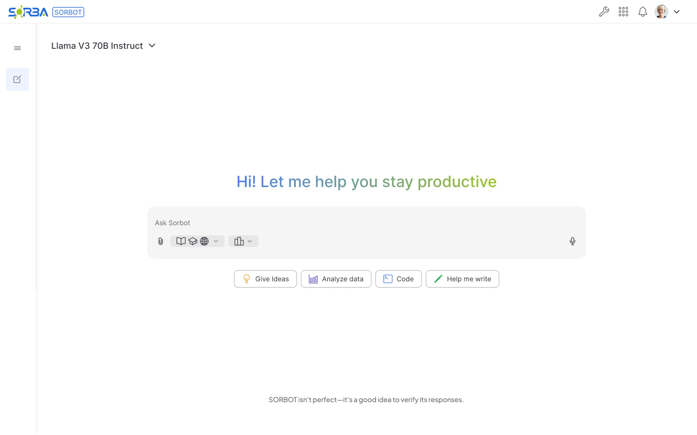
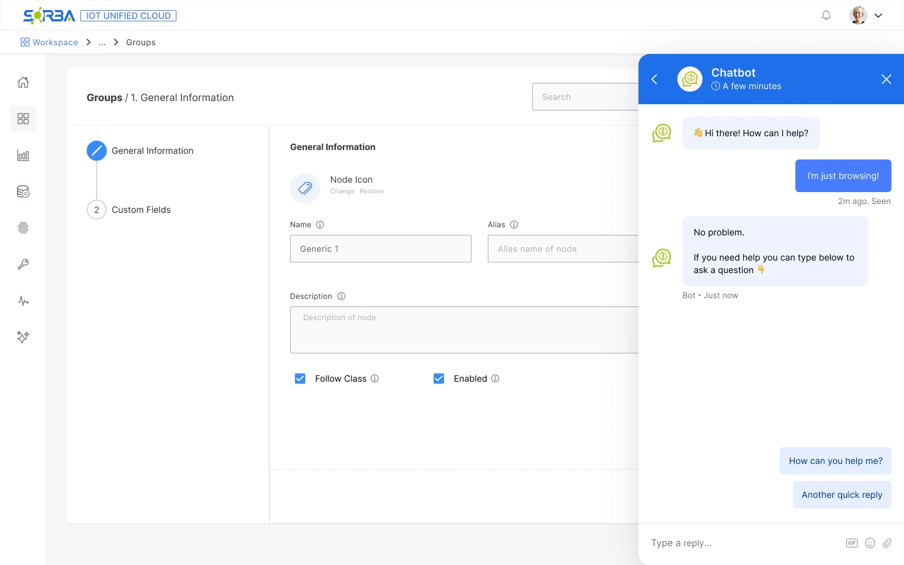
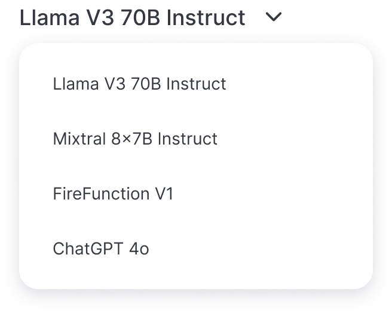
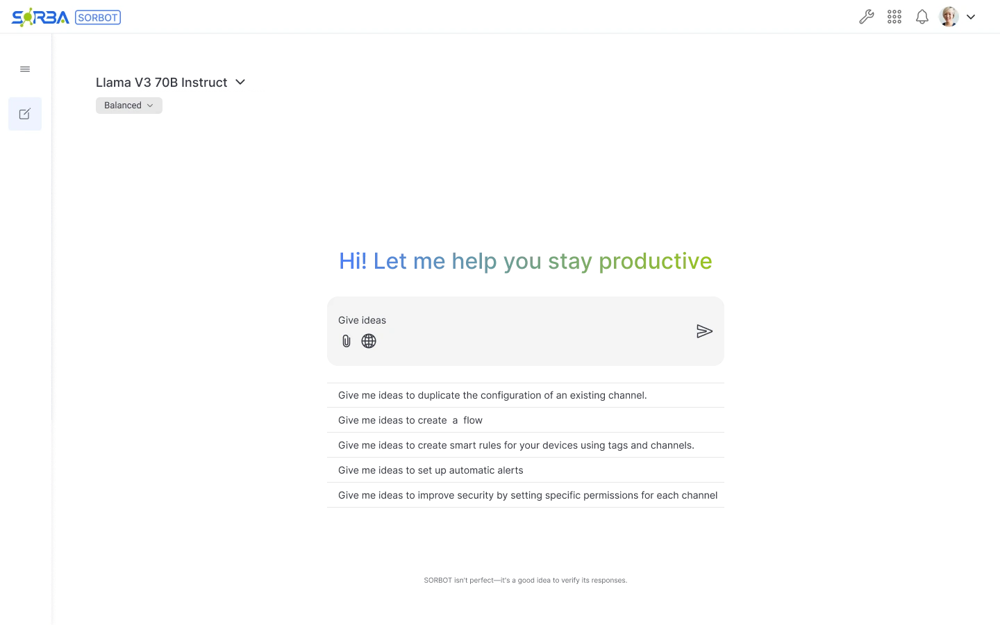

Case study 03 · Sorba.ai · Sorbot
AI guidance,
inside the workflow.
Designing Sorbot to guide users through IoT Unified configuration, in a dedicated assistant and alongside their work.

The need
Guidance through a complex, data-rich workspace.
The approach
A dedicated assistant and help within node configuration.
The control
A visible choice of AI model.
Context
Helping users navigate technical complexity.
IoT Unified brings together a large volume of data and many configurable nodes. The company needed an AI assistant that users could turn to for guidance on setting up a node or resolving configuration questions.
My contribution
Reviewed conversational AI references, iterated on the interface and designed the dedicated and embedded experiences, including model selection. I used developers from unrelated projects as stakeholders because direct access to industrial users was unavailable.
Design challenge
How can AI help users configure a complex workspace?
The interface needed to support broad questions and focused configuration tasks, while keeping the choice of model understandable.
Help with configuration
Give users a place to ask about nodes, settings and the information in their workspace.
Keep the task nearby
Offer an assistant within the node flow, so the form and the conversation can remain on screen.
Expose the model choice
Make the active model visible and give users control over which one they use.
Pattern research
Learning from familiar AI interfaces.
I explored ChatGPT, Gemini, DeepSeek and other AI products as references, then iterated on what could fit IoT Unified. This was a review of interface patterns, separate from research with end users.
- ChatGPT
- Gemini
- DeepSeek
The design questions: how should someone begin a conversation, understand the available controls and choose a model? I adapted those patterns to questions about industrial data and configuration.
What I adapted
A familiar message composer, task-oriented starting points, a visible model selector and a reminder to verify responses.
Design decisions
Two places to ask for help.
The dedicated Sorbot workspace gives the conversation its own space. Within a node flow, a side panel places help alongside configuration. The purpose is the same; the amount of space and the surrounding task are different.
Decision 01 — Keep help close to the task

The trade-off
A side panel also takes space from the form. A key validation question is whether users can still see and reach important fields while asking for help.
Decision 02 — Make the model choice visible
The user chooses the model.
Sorbot supports more than one model. I kept the selector visible in the dedicated workspace and used an explicit list of model names, so the choice is available without hiding it in settings.

Model options shown in the design. No performance ranking is implied.
Decision 03 — Give users a way to begin
Turn a blank prompt into a starting point.
The home offers starter actions, while this exploration suggests questions about channels, flows, smart rules, alerts and permissions. The intent was to connect a familiar chat pattern to the language of IoT Unified.

Decision 04 — Set expectations about AI responses
Guidance still needs verification.
The interface includes a reminder to verify Sorbot’s responses. It sets a boundary around the assistant: an answer should be checked before it informs a configuration change.
In-product reminder
SORBOT isn’t perfect—it’s a good idea to verify its responses.
Iteration & stakeholder review
Reviewing beyond the project team.
The project took approximately two months. Company practice did not give me direct access to real users in the industrial sector, so I involved developers from other, unrelated projects as stakeholders while iterating on the design.
Their outside perspective gave me people to review the proposals with. It did not replace validation with the people who would configure nodes in their day-to-day work.
Design outcome & next validation
An assistant designed around the task.
The design brings together a dedicated assistant, chat within a node flow and user-controlled model selection. Its effect on configuration success, time to complete a task and support needs still needs to be evaluated with end users.
Find the right help
Can users identify when to open Sorbot and when to use help inside the node flow?
Understand the model
Can users identify the active model and understand what changes when they select another one?
Check before changing
Can users verify an answer and apply it while keeping important configuration fields visible?